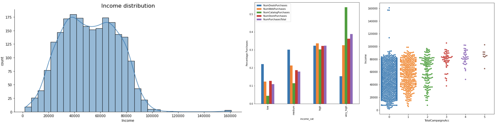
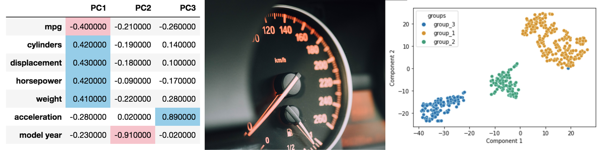
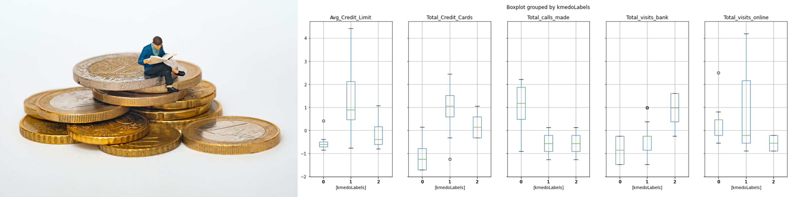
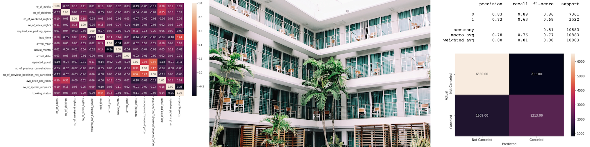
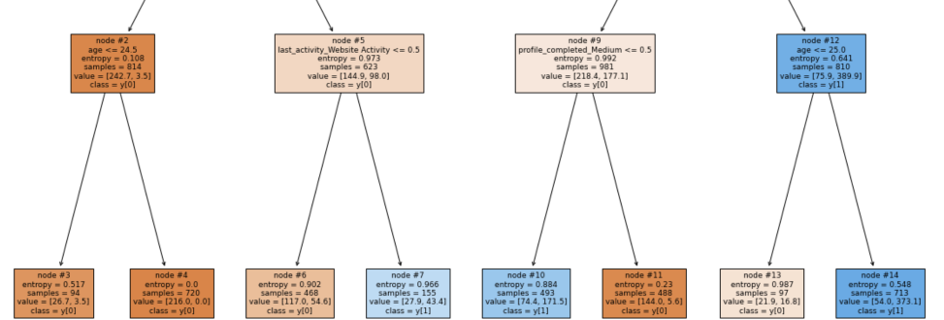
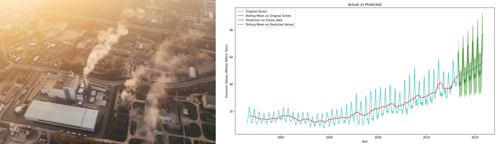
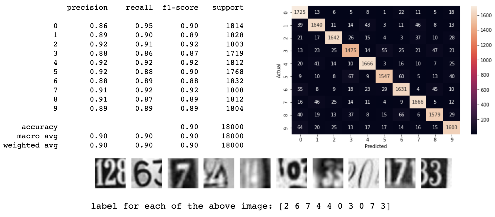

Skills
Microsoft Office, Python, Jupyter, NumPy, pandas, Matplotlib, seaborn, scikit-learn, StatsModels, TensorFlow, Minitab, MATLAB, Aspen Plus
Industry Projects
Generated queries to pull data to track critical process parameters, yield, and manufacturing downtime. Queries ensure consistent, reliable, efficient manufacturing process and business performance.
Data analysis of raw material suppliers that showed a 40% difference between the highest and lowest supplier yields.
Data analysis of final product parameters to direct new and existing customers on physical and chemical product capabilities
Foundations of Data Science
Marketing Campaign Analysis
NotebookThis project aims to analyze marketing data and address key business problems/questions related to customer demographics, product preferences, channel performances, etc.
Skills: Exploratory Data Analysis, Data Visualization, Statistics
Data Analysis and Visualization
Dimensional Reduction on Automobile MPG Data
NotebookThis project involves exploring the automobile mpg dataset by applying dimensionality reduction techniques and visualizing the data in lower dimensions to extract insights.
Skills: PCA, tSNE
Banking Customer Segmentation
NotebookThis project involves segmenting the bank customers to help the bank upgrading the service delivery model and ensure that customers queries are resolved faster.
Skills: Unsupervised Learning, Clustering
Machine Learning
Predicting Boston Housing Cost
NotebookThis project involves predicting the house prices based on the features of the locality using regression techniques.
Skills: Linear Regression
Predicting Hotel Booking Cancellations
NotebookThis project involves predicting which hotel bookings will result in cancellations using classification algorithms to help the hotel prevent potential losses from last minute cancellations and additional costs to resell rooms.
Skills: Logistic Regression, kNN
Practical Data Science
Predicting Online Education Enrollment
NotebookThis project involves predicting the which individuals will enroll in an online education program using classification algorithms. The classification will allow the online program recruiters to properly allocate resources for potential students.
Skills: Decision Trees, Random Forest
Predicting Natural Gas CO2 Emissions
NotebookThis project involves predicting the natural gas CO2 emission values using time series analysis.
Skills: Time Series
Deep Learning
Street Housing Number Recognition
Notebook NotebookThis project involves recognizing the street view housing number digit by using artificial and convolutional neural networks.
Skills: Artificial Neural Networks, Convolutional Neural Networks
Recommendation Systems
Amazon Product Recommendations
NotebookThis project involves recommending the best Amazon products available to the users by using recommendation systems techniques.
Skills: Rank Based Recommendation Systems, Similarity Based Recommendation Systems, Matrix Factorization Based Recommendation Systems